By the end of this section, you will be able to:
Modern society has numerous applications of Faraday’s law of induction, as we will explore in this chapter and others. At this juncture, let us mention several that involve recording information using magnetic fields.
Some computer hard drives apply the principle of magnetic induction. Recorded data are made on a coated, spinning disk. Historically, reading these data was made to work on the principle of induction. However, most input information today is carried in digital rather than analog form—a series of 0s or 1s are written upon the spinning hard drive. Therefore, most hard drive readout devices do not work on the principle of induction, but use a technique known as giant magnetoresistance. Giant magnetoresistance is the effect of a large change of electrical resistance induced by an applied magnetic field to thin films of alternating ferromagnetic and nonmagnetic layers. This is one of the first large successes of nanotechnology.
Graphics tablets, or tablet computers where a specially designed pen is used to draw digital images, also applies induction principles. The tablets discussed here are labeled as passive tablets, since there are other designs that use either a battery-operated pen or optical signals to write with. The passive tablets are different than the touch tablets and phones many of us use regularly, but may still be found when signing your signature at a cash register. Underneath the screen, shown in [link], are tiny wires running across the length and width of the screen. The pen has a tiny magnetic field coming from the tip. As the tip brushes across the screen, a changing magnetic field is felt in the wires which translates into an induced emf that is converted into the line you just drew.
Another application of induction is the magnetic stripe on the back of your personal credit card as used at the grocery store or the ATM machine. This works on the same principle as the audio or video tape, in which a playback head reads personal information from your card.
Check out this video to see how flashlights can use magnetic induction. A magnet moves by your mechanical work through a wire. The induced current charges a capacitor that stores the charge that will light the lightbulb even while you are not doing this mechanical work.
Electric and hybrid vehicles also take advantage of electromagnetic induction. One limiting factor that inhibits widespread acceptance of 100% electric vehicles is that the lifetime of the battery is not as long as the time you get to drive on a full tank of gas. To increase the amount of charge in the battery during driving, the motor can act as a generator whenever the car is braking, taking advantage of the back emf produced. This extra emf can be newly acquired stored energy in the car’s battery, prolonging the life of the battery.
Another contemporary area of research in which electromagnetic induction is being successfully implemented is transcranial magnetic stimulation (TMS). A host of disorders, including depression and hallucinations, can be traced to irregular localized electrical activity in the brain. In transcranial magnetic stimulation, a rapidly varying and very localized magnetic field is placed close to certain sites identified in the brain. The usage of TMS as a diagnostic technique is well established.
Check out this Youtube video to see how rock-and-roll instruments like electric guitars use electromagnetic induction to get those strong beats.
| Magnetic flux | |
| Faraday’s law | |
| Motionally induced emf | |
| Motional emf around a circuit | |
| Emf produced by an electric generator |
Shown in the following figure is a long, straight wire and a single-turn rectangular loop, both of which lie in the plane of the page. The wire is parallel to the long sides of the loop and is 0.50 m away from the closer side. At an instant when the emf induced in the loop is 2.0 V, what is the time rate of change of the current in the wire?
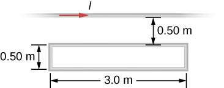4.8 × 106 A/s
A metal bar of mass 500 g slides outward at a constant speed of 1.5 cm/s over two parallel rails separated by a distance of 30 cm which are part of a U-shaped conductor. There is a uniform magnetic field of magnitude 2 T pointing out of the page over the entire area. The railings and metal bar have an equivalent resistance of (a) Determine the induced current, both magnitude and direction. (b) Find the direction of the induced current if the magnetic field is pointing into the page. (c) Find the direction of the induced current if the magnetic field is pointed into the page and the bar moves inwards.
A current is induced in a circular loop of radius 1.5 cm between two poles of a horseshoe electromagnet when the current in the electromagnet is varied. The magnetic field in the area of the loop is perpendicular to the area and has a uniform magnitude. If the rate of change of magnetic field is 10 T/s, find the magnitude and direction of the induced current if resistance of the loop is .
, the direction as follows for increasing magnetic field:
A metal bar of length 25 cm is placed perpendicular to a uniform magnetic field of strength 3 T. (a) Determine the induced emf between the ends of the rod when it is not moving. (b) Determine the emf when the rod is moving perpendicular to its length and magnetic field with a speed of 50 cm/s.
A coil with 50 turns and area 10 is oriented with its plane perpendicular to a 0.75-T magnetic field. If the coil is flipped over (rotated through ) in 0.20 s, what is the average emf induced in it?
0.375 V
A 2-turn planer loop of flexible wire is placed inside a long solenoid of n turns per meter that carries a constant current . The area A of the loop is changed by pulling on its sides while ensuring that the plane of the loop always remains perpendicular to the axis of the solenoid. If per meter, and what is the emf induced in the loop when
The conducting rod shown in the accompanying figure moves along parallel metal rails that are 25-cm apart. The system is in a uniform magnetic field of strength 0.75 T, which is directed into the page. The resistances of the rod and the rails are negligible, but the section PQ has a resistance of . (a) What is the emf (including its sense) induced in the rod when it is moving to the right with a speed of 5.0 m/s? (b) What force is required to keep the rod moving at this speed? (c) What is the rate at which work is done by this force? (d) What is the power dissipated in the resistor?
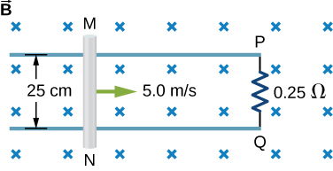a. 0.94 V; b. 0.70 N; c. 3.52 J/s; d. 3.52 W
A circular loop of wire of radius 10 cm is mounted on a vertical shaft and rotated at a frequency of 5 cycles per second in a region of uniform magnetic field of 2 Gauss perpendicular to the axis of rotation. (a) Find an expression for the time-dependent flux through the ring. (b) Determine the time-dependent current through the ring if it has a resistance of 10
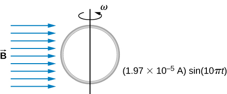The magnetic field between the poles of a horseshoe electromagnet is uniform and has a cylindrical symmetry about an axis from the middle of the South Pole to the middle of the North Pole. The magnitude of the magnetic field changes as a rate of dB/dt due to the changing current through the electromagnet. Determine the electric field at a distance r from the center.
A long solenoid of radius a with n turns per unit length is carrying a time-dependent current , where and are constants. The solenoid is surrounded by a wire of resistance R that has two circular loops of radius b with (see the following figure). Find the magnitude and direction of current induced in the outer loops at time .
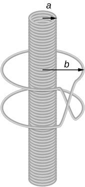A 120-V, series-wound dc motor draws 0.50 A from its power source when operating at full speed, and it draws 2.0 A when it starts. The resistance of the armature coils is . (a) What is the resistance of the field coils? (b) What is the back emf of the motor when it is running at full speed? (c) The motor operates at a different speed and draws 1.0 A from the source. What is the back emf in this case?
a. ;
b. ;
c.
The armature and field coils of a series-wound motor have a total resistance of . When connected to a 120-V source and running at normal speed, the motor draws 4.0 A. (a) How large is the back emf? (b) What current will the motor draw just after it is turned on? Can you suggest a way to avoid this large initial current?
A copper wire of length L is fashioned into a circular coil with N turns. When the magnetic field through the coil changes with time, for what value of N is the induced emf a maximum?
N is a maximum number of turns allowed.
A 0.50-kg copper sheet drops through a uniform horizontal magnetic field of 1.5 T, and it reaches a terminal velocity of 2.0 m/s. (a) What is the net magnetic force on the sheet after it reaches terminal velocity? (b) Describe the mechanism responsible for this force. (c) How much power is dissipated as Joule heating while the sheet moves at terminal velocity?
A circular copper disk of radius 7.5 cm rotates at 2400 rpm around the axis through its center and perpendicular to its face. The disk is in a uniform magnetic field of strength 1.2 T that is directed along the axis. What is the potential difference between the rim and the axis of the disk?
0.848 V
A short rod of length a moves with its velocity parallel to an infinite wire carrying a current I (see below). If the end of the rod nearer the wire is a distance b from the wire, what is the emf induced in the rod?
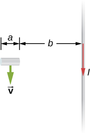A rectangular circuit containing a resistance R is pulled at a constant velocity away from a long, straight wire carrying a current (see below). Derive an equation that gives the current induced in the circuit as a function of the distance x between the near side of the circuit and the wire.
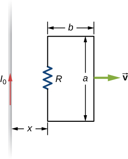Two infinite solenoids cross the plane of the circuit as shown below. The radii of the solenoids are 0.10 and 0.20 m, respectively, and the current in each solenoid is changing such that What are the currents in the resistors of the circuit?
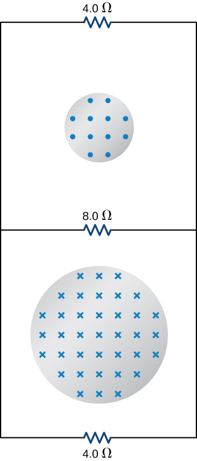An eight-turn coil is tightly wrapped around the outside of the long solenoid as shown below. The radius of the solenoid is 2.0 cm and it has 10 turns per centimeter. The current through the solenoid increases according to where and What is the emf induced in the coil when (a) , (b) and (c)
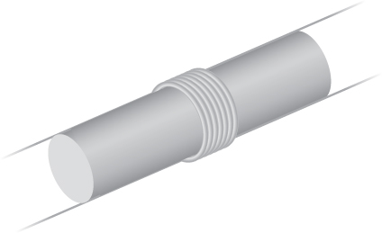a. ; b. ; c. 0 V
Shown below is a long rectangular loop of width w, length l, mass m, and resistance R. The loop starts from rest at the edge of a uniform magnetic field and is pushed into the field by a constant force Calculate the speed of the loop as a function of time.
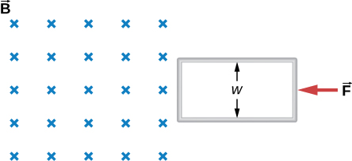A square bar of mass m and resistance R is sliding without friction down very long, parallel conducting rails of negligible resistance (see below). The two rails are a distance l apart and are connected to each other at the bottom of the incline by a zero-resistance wire. The rails are inclined at an angle , and there is a uniform vertical magnetic field throughout the region. (a) Show that the bar acquires a terminal velocity given by (b) Calculate the work per unit time done by the force of gravity. (c) Compare this with the power dissipated in the Joule heating of the bar. (d) What would happen if were reversed?
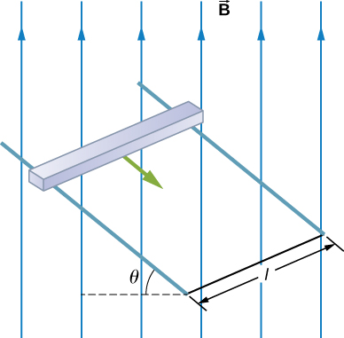a. b. ; c. ; d. current would reverse direction but bar would still slide at the same speed
The accompanying figure shows a metal disk of inner radius and other radius rotating at an angular velocity while in a uniform magnetic field directed parallel to the rotational axis. The brush leads of a voltmeter are connected to the dark’s inner and outer surfaces as shown. What is the reading of the voltmeter?
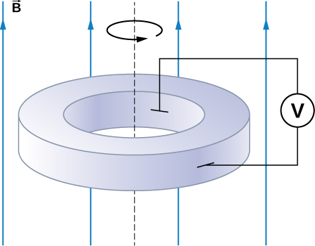A long solenoid with 10 turns per centimeter is placed inside a copper ring such that both objects have the same central axis. The radius of the ring is 10.0 cm, and the radius of the solenoid is 5.0 cm. (a) What is the emf induced in the ring when the current I through the solenoid is 5.0 A and changing at a rate of 100 A/s? (b) What is the emf induced in the ring when and (c) What is the electric field inside the ring for these two cases? (d) Suppose the ring is moved so that its central axis and the central axis of the solenoid are still parallel but no longer coincide. (You should assume that the solenoid is still inside the ring.) Now what is the emf induced in the ring? (e) Can you calculate the electric field in the ring as you did in part (c)?
a.
b. ;
c. ; d. ;
e. no, because there is no cylindrical symmetry
The current in the long, straight wire shown in the accompanying figure is given by where and What is the current induced in the rectangular loop at (a) and (b) The resistance of the loop is
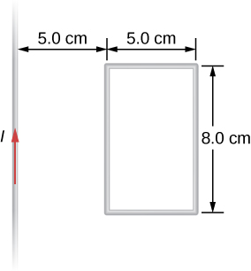A 500-turn coil with a area is spun in Earth’s magnetic field, producing a 12.0-kV maximum emf. (a) At what angular velocity must the coil be spun? (b) What is unreasonable about this result? (c) Which assumption or premise is responsible?
a. ; b. This angular velocity is unreasonably high, higher than can be obtained for any mechanical system. c. The assumption that a voltage as great as 12.0 kV could be obtained is unreasonable.
A circular loop of wire of radius 10 cm is mounted on a vertical shaft and rotated at a frequency of 5 cycles per second in a region of uniform magnetic field of perpendicular to the axis of rotation. (a) Find an expression for the time-dependent flux through the ring (b) Determine the time-dependent current through the ring if it has a resistance of .
A long solenoid of radius with turns per unit length is carrying a time-dependent current where and are constants. The solenoid is surrounded by a wire of resistance R that has two circular loops of radius b with . Find the magnitude and direction of current induced in the outer loops at time .
A rectangular copper loop of mass 100 g and resistance is in a region of uniform magnetic field that is perpendicular to the area enclosed by the ring and horizontal to Earth’s surface (see below). The loop is let go from rest when it is at the edge of the nonzero magnetic field region. (a) Find an expression for the speed when the loop just exits the region of uniform magnetic field. (b) If it was let go at , what is the time when it exits the region of magnetic field for the following values: , ?
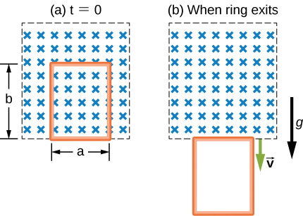A metal bar of mass m slides without friction over two rails a distance D apart in the region that has a uniform magnetic field of magnitude and direction perpendicular to the rails (see below). The two rails are connected at one end to a resistor whose resistance is much larger than the resistance of the rails and the bar. The bar is given an initial speed of . It is found to slow down. How far does the bar go before coming to rest? Assume that the magnetic field of the induced current is negligible compared to .
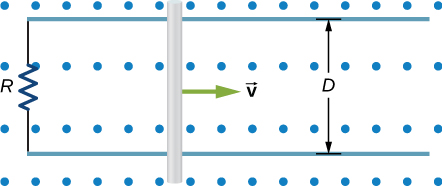A time-dependent uniform magnetic field of magnitude B(t) is confined in a cylindrical region of radius R. A conducting rod of length 2D is placed in the region, as shown below. Show that the emf between the ends of the rod is given by . (Hint: To find the emf between the ends, we need to integrate the electric field from one end to the other. To find the electric field, use Faraday’s law as “Ampère’s law for E.”)
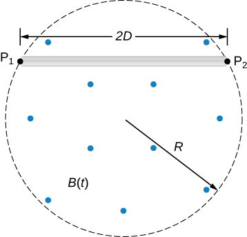